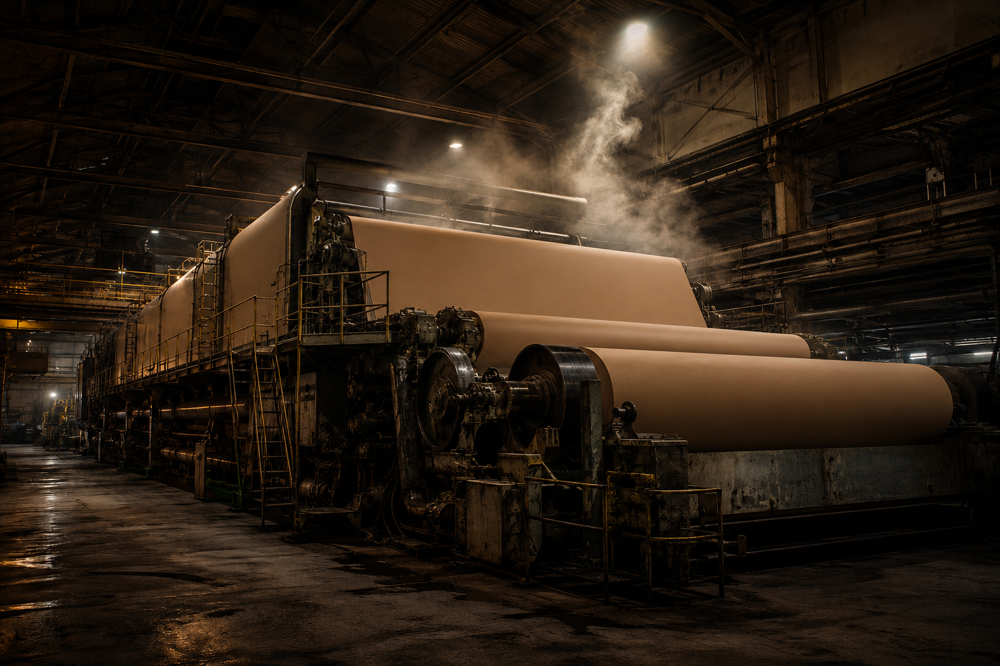

Daily operating priorities
Review changes in process conditions, investigate exceptions, and give the mill a concise set of findings to discuss at the start of the day.
Pulp & Paper
Envoy helps pulp and paper teams identify meaningful operating changes, understand difficult problems, and keep attention on the conditions that influence mill performance.
Our foundation since 2003. Engineering judgment remains at the center of the service.
The Industry We Grew Up In
A change in one area can appear as a problem somewhere else. Production rate, furnish, grade, utilities, and equipment condition all affect how an operating signal should be interpreted. A useful finding needs that context.
Our engineers bring practical mill experience to the daily review of operating data. They help distinguish a meaningful change from ordinary variation and look beyond an individual trend when a problem calls for deeper investigation.
The morning report is a starting point for action. Special studies, operating-target development, and ongoing engineering conversations extend that support to the questions that take more work to answer.
Practical Applications
Choose a starting point around the operating questions your mill is already working to answer.
Review changes in process conditions, investigate exceptions, and give the mill a concise set of findings to discuss at the start of the day.
Use strong historical runs and engineering judgment to develop target ranges that reflect grade, rate, and other relevant operating conditions.
Investigate breaks, variability, and persistent quality issues by comparing operating periods and examining the relationships between process variables.
Examine energy and material use, equipment behavior, and control-loop performance to help identify conditions that deserve closer attention.
The scope follows the mill’s priorities, available signals, and engineering needs. Product demonstrations can use examples relevant to the process area you want to discuss.
From Findings to Follow-Through
Start with daily reporting for a specific process area. Add deeper investigations when the team needs to understand a change, compare operating periods, or troubleshoot a persistent issue.
Smart Centerlines can help make operating targets clearer. Envoy Intelligence builds on equipment context and engineering knowledge to support the next decision. Each step should solve a practical need for the people running the mill.
We’ll discuss how the work fits your existing historian, operating routines, and engineering team, then agree on the initial scope and what useful progress looks like.

Start a Conversation
Tell us about the process area, recurring issue, or operating objective. We’ll walk through the relevant capabilities and discuss a useful place to start.